Criando e Editando Issues¶
O Issue é uma ferramenta interessante do GitHub para deixar um feedback ou auxiliar na construção de algum projeto desenvolvido por outras pessoas. Trata-se da ideia de deixar comentários em projetos. Com ela, é possível escrever textos, colocar imagens, usar alguns métodos de marcação, colocar links e postar "emojis" para fortificar a sua issue. Com esse recurso, os programadores ativos conseguem aumentar sua networking participando em outros projetos. Não é a toa que o GitHub também é respeitado por ser uma verdadeira rede social profissional.
Há duas possibilidades de se usar uma issue: a interação por parte dos donos do projeto e a interação por parte dos colaboradores. Vamos ver abaixo como ocorre os procedimentos nas duas situações.
Criando uma Issue Enquanto Colaborador¶
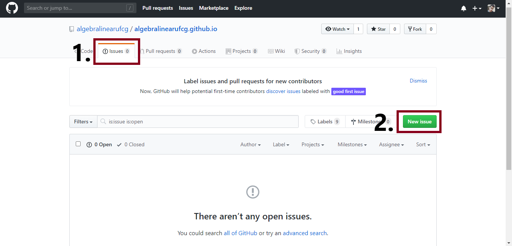
- Quando você acessar qualquer repositório do GitHub, será possível visualizar uma aba chamada Issue, nela você pode deixar a sua contribuição.
- Clique em "New issue" para fazer o seu comentário.
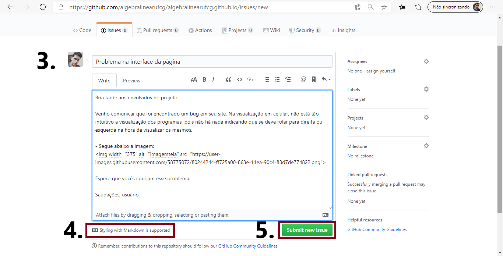
- Ao clicar em "New issue", você pode fazer seu comentário. Coloque um título e relate a sua mensagem com clareza.
- Issues suportam a linguagem de marcação Marckdown, a mesma que é usada para embelezar o documento README.md.
- Clique em "Submit now issue" para publicar o seu comentário.
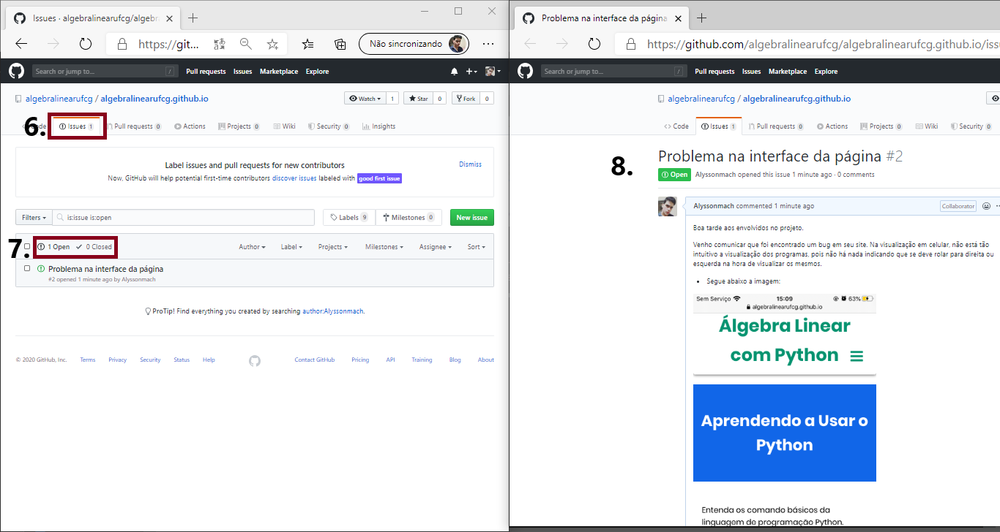
- A quantidade total de issues abertas no repositório será contabilizada ao lado da opção "Issue".
- Quando uma issue é criada, os donos do repositório podem mantê-las abertas ou fechadas, do mesmo modo é possível verificar o status das que já foram finalizadas e as que estão pendentes.
- Quando você clica em uma issue, é possível ver o conteúdo da mensagem. Tanto o usuário quanto os donos do repositório podem comentar ou reagir com emojis a elas. Além disso, o criador da mesma pode editá-las posteriormente.
Reagindo a Issues Enquanto Titular do Repositório¶
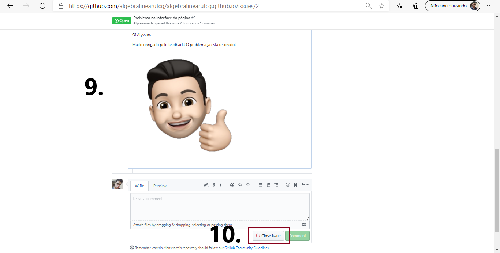
- Como titular do repositório, você pode comentar a mensagem do usuário.
- Caso a issue tenha cumprido o seu objetivo, você pode fechá-la em "Close issue". Desse modo, é possível organizar todas elas que foram deixadas em seu repositório.
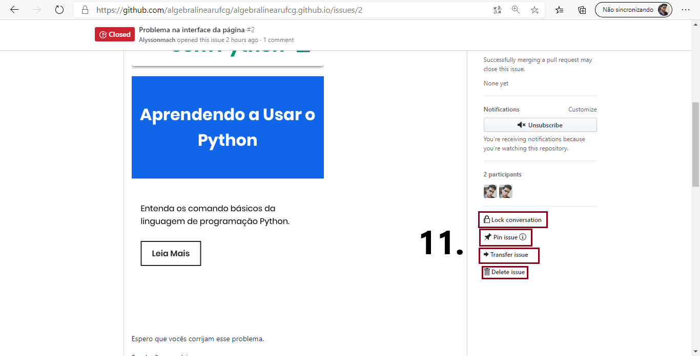
- Você também pode impedir que uma issue possa ser comentada por outros usuário em "Lock conversation", marcá-la no topo em "Pin issue", transferir para outro repositório em "Transfer issue" ou deletar totalmente em "Delete issue".
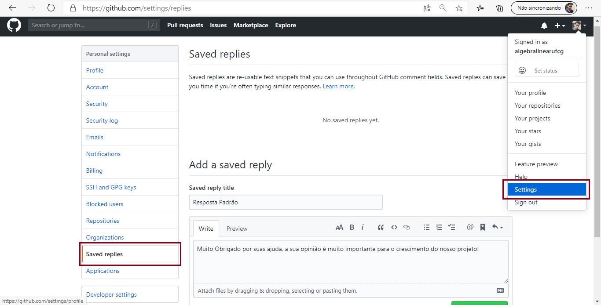
- Você também pode criar respostas padrões. Em "Settings", você pode ir em "Saved replies" para adicionar uma resposta padrão as issues.
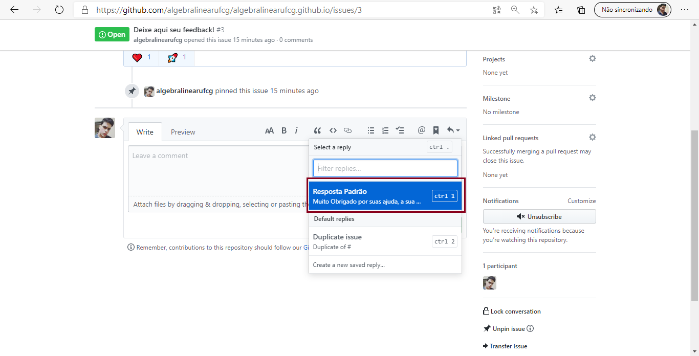
- Dessa forma, você pode respoder as mensagens dos contribuidores em seu projeto de forma mais eficaz.
Com essa ferramenta, você pode ser contribuidor de grandes projetos. O simples fato de relatar erros ou sugerir alterações são de grande ajuda para códigos desenvolvidos em Open Source.
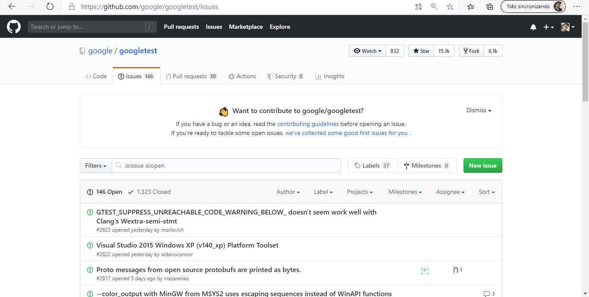
- Vejas as issues que um dos repositórios da Google possuem. Provavelmente eles aproveitaram bastante a contribuição de outros usuários para fazer boas implementações e alterações em seu projeto.
Criando Forks¶
Outra forma de você colaborar em algum projeto é criando um "Fork". Com essa ferramenta, um usuário pode ter uma cópia de outros repositórios para editá-los da forma que for mais conveniente. Desse modo, programadores podem fazer alterações práticas em outros projetos para mostrar as novidades aos titulares do repositório. Se ele for favorável as mudanças, há como trazê-las ao repositório, ganhando novos recursos no projeto e fazendo com que o programador responsável por essas implementações torne-se um colaborador.
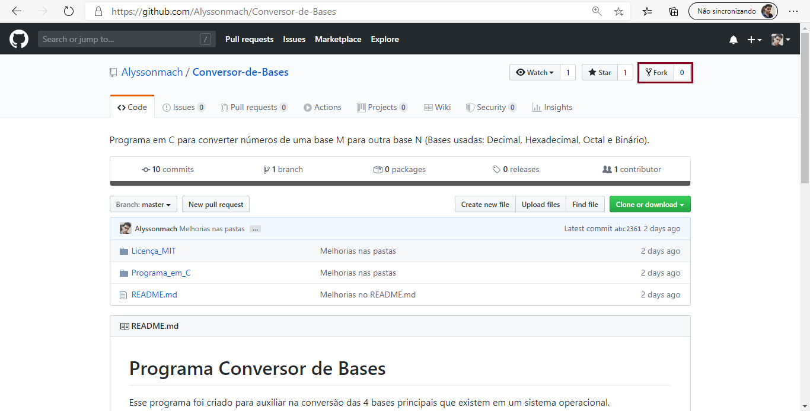
- Quando você entra em algum repositório em que você não está vinculado, há uma opção no canto superior direito da tela para criar um "fork", clique nela.
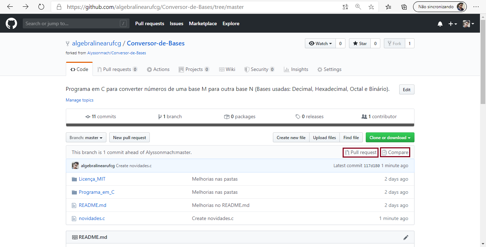
- Repare que ao clicar nessa opção, todo o conteúdo do repositório aparece copiado em sua conta, sendo uma versão em que você pode fazer qualquer tipo de edição usando os recursos ensinados anteriormentes. Observe que há duas opções para você clicar: em "Compare" você pode ver tudo que foi modificado na nova versão feita por você; já em "Pull request", você pode enviar todo o trabalho de modificações do repositório ao seu titular.
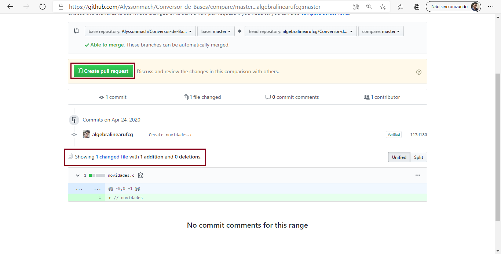
- Clicando em "Compare", você pode ver tudo que foi alterado. Dentro dessa opção, há uma aba de nome "Create pull request", em que você também pode enviar ao titular do repositório o seu versionamento ao repositório, após todos as alterações terem sido concluidas.
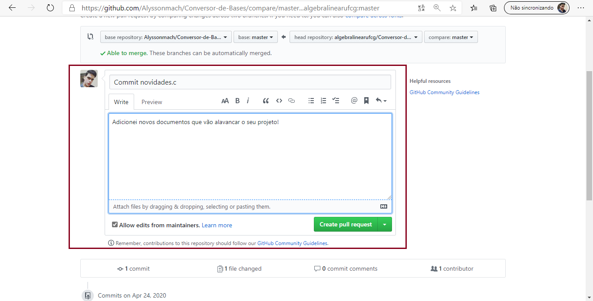
- Clicando em "Create pull request", você pode enviar todas as alterações que você fez ao titular, de modo que ele possa enxergar os exatos pontos modificados. Além disso, você tem todo um espaço para comentar o que o levou a realizar tais alterações.
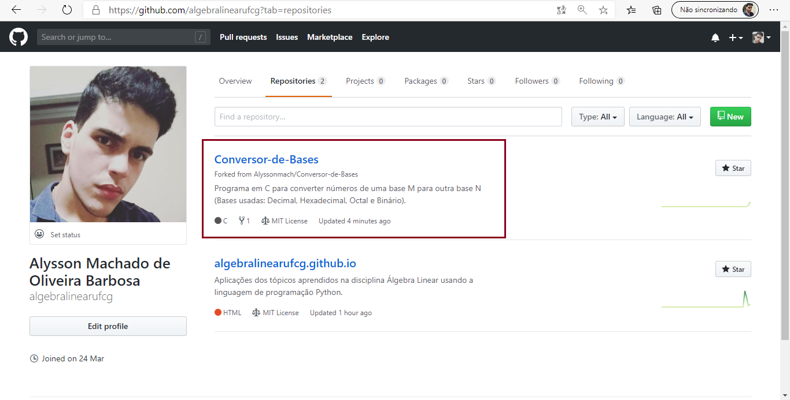
- Veja que o fork criado ficará na sua aba de repositórios, mas ele tem um símbolo na parte inferior que indica que aquilo não é um repositório seu, mas sim um fork de outro projeto.
Visualizando um Fork Feito no Seu Repositório¶
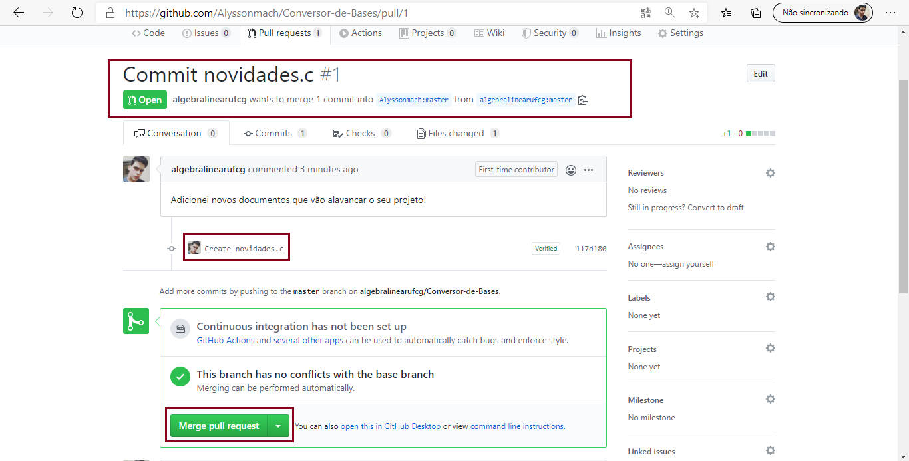
- Na conta do autor, o fork é recebido no formato da imagem acima. Caso ele tenha aceitado todas as alterações feitas pelo colaborador, clicando em "Merge pull request" é possível adicionar todas as alterações ao repositório original, tornando assim o usuário responsável por elas um contribuidor do projeto. O Visual Studio Code por exemplo, possui mais de 4,000 contribuidores, dado que todo o seu código fonte é aberto e está disponível no GitHub.
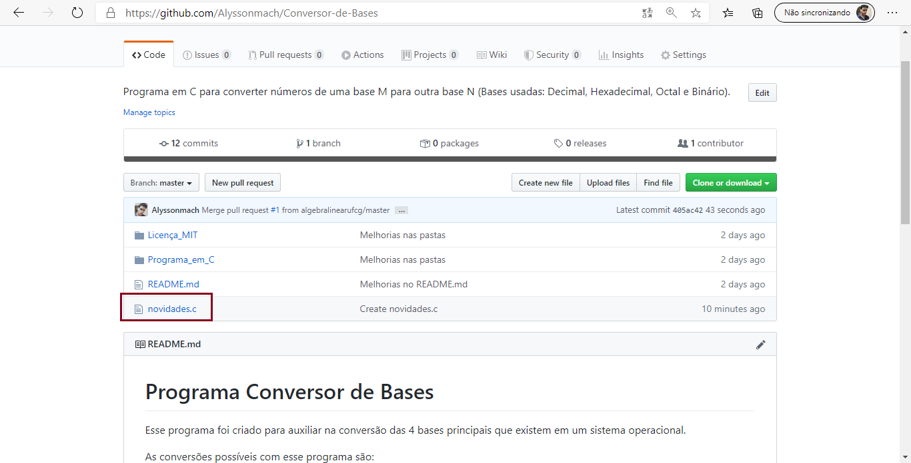
- Observe agora que, quando o titular do repositório aceitou as alterações e clicou em "Merge pull request", o repositório oficial do projeto agora possui o conteúdo que foi adicionado.
Próximos Passos...¶
Na próxima aula vamos aprender conceitos importantes da linguagem de marcação Markdown. Com ela, você pode formatar tanto sua página web para usar recursos do GitHub Pages, quanto algumas outras ferramentas também compátiveis com o GitHub, já que o Markdown é integrado a ele.
Está gostando do conteúdo? Compartilhe com seus amigos para que eles possam aprender também! Ajude a tornar a educação gratuita mais plural e democrática.